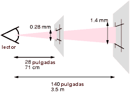
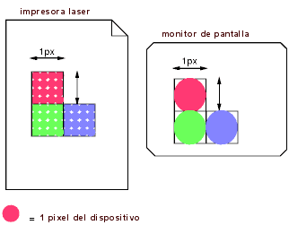

Contenidos
Esta sección describe una gramática (y reglas de análisis con compatibilidad futura) común a cualquier versión de CSS (incluyendo CSS2). Las futuras versiones de CSS adherirán a esta sintaxis central, aunque pueden agregar restricciones sintácticas adicionales.
Estas descripciones son normativas. También están complementadas por las reglas normativas de gramática presentadas en el Apéndice D.
Todos los niveles de CSS --nivel 1, nivel 2 y cualquier futuro nivel-- usan la misma sintaxis central. Esto permite a las AU analizar (aún cuando no las entiendan completamente) las hojas de estilo escritas en niveles de CSS que no existían en el momento en que la AU fue creada. Los diseñadores pueden usar esta característica para crear hojas de estilo que funcionen con aplicaciones de usuario antiguas, mientras ejercitan también las posibilidades de los niveles más nuevos de CSS.
A nivel de léxico, las hojas de estilo CSS consisten de una secuencia de comandos. La lista de comandos para CSS2 es la que sigue. Las definiciones usan expresiones regulares al estilo de Lex. Los códigos octales se refieren a ISO 10646 ([ISO10646]). Como en Lex, en caso de múltiples equivalencias, la equivalencia más larga determina el comando.
| Comando | Definición |
|---|---|
| IDENT | {ident}
|
| ATKEYWORD | @{ident}
|
| STRING | {string}
|
| HASH | #{name}
|
| NUMBER | {num}
|
| PERCENTAGE | {num}%
|
| DIMENSION | {num}{ident}
|
| URI | url\({w}{string}{w}\)
|
| UNICODE-RANGE | U\+[0-9A-F?]{1,6}(-[0-9A-F]{1,6})?
|
| CDO | <!--
|
| CDC | -->
|
| ; | ;
|
| { | \{
|
| } | \}
|
| ( | \(
|
| ) | \)
|
| [ | \[
|
| ] | \]
|
| S | [ \t\r\n\f]+
|
| COMMENT | \/\*[^*]*\*+([^/][^*]*\*+)*\/
|
| FUNCTION | {ident}\(
|
| INCLUDES | ~=
|
| DASHMATCH | |=
|
| DELIM | cualquier otro carácter no equivalente con las reglas anteriores |
Las macros entre llaves ({}) arriba son definidas como sigue:
| Macro | Definición |
|---|---|
| ident | {nmstart}{nmchar}*
|
| name | {nmchar}+
|
| nmstart | [a-zA-Z]|{nonascii}|{escape}
|
| nonascii | [^\0-\177]
|
| unicode | \\[0-9a-f]{1,6}[ \n\r\t\f]?
|
| escape | {unicode}|\\[ -~\200-\4177777]
|
| nmchar | [a-zA-Z0-9]|{nonascii}|{escape}
|
| num | [0-9]+|[0-9]*\.[0-9]+
|
| string | {string1}|{string2}
|
| string1 | \"([\t !#$%&(-~]|\\{nl}|\'|{nonascii}|{escape})*\"
|
| string2 | \'([\t !#$%&(-~]|\\{nl}|\"|{nonascii}|{escape})*\'
|
| nl | \n|\r\n|\r|\f
|
| w | [ \t\r\n\f]*
|
Abajo está la sintaxis central para CSS. Las secciones siguientes describen cómo usarla. El Apéndice D describe una gramática más restrictiva que es más cercana al lenguaje de CSS nivel 2.
hoja de estilo : [ CDO | CDC | S | estamento ]*;
estamento : regla | regla-arroba;
regla-arroba : ATKEYWORD S* otros* [ bloque | ';' S* ];
bloque : '{' S* [ otros | bloque | ATKEYWORD S* | ';' ]* '}' S*;
regla : selector? '{' S* declaración? [ ';' S* declaración? ]* '}' S*;
selector : otros+;
declaración : propiedad ':' S* valor;
propiedad : IDENT S*;
valor : [ otros | bloque | ATKEYWORD S* ]+;
otros : [ IDENT | NUMBER | PERCENTAGE | DIMENSION | STRING
| DELIM | URI | HASH | UNICODE-RANGE | INCLUDES
| FUNCTION | DASHMATCH | '(' otros* ')' | '[' otros* ']' ] S*;
Los comandos COMMENT no aparecen en la gramática (para mantenerla legible), pero cualquier cantidad de estos comandos pueden aparecer en cualquier lugar entre otros comandos.
El comando S en la gramática anterior está colocado para los espacios en blanco. Solamente los caracteres "espacio" (código 32 en Unicode), "tabulador" (9), "avance de línea" (10), "retorno de carro" (13) y "avance de hoja" (12) pueden aparecer en los espacios en blanco. Otros caracteres que producen espacios, tales como "espacio eme" (8195) y "espacio ideográfico" (12288) nunca forman parte de los espacios en blanco.
Las palabras clave toman la forma de identificadores. Las palabras clave no deben ir entre comillas ("..." o '...'). De este modo,
red
es una palabra clave, pero
"red"no lo es. (Es una cadena.) Otros ejemplos ilícitos:
width: "auto"; border: "none"; font-family: "serif"; background: "red";
Las reglas siguientes siempre sostienen:
Observe que Unicode es simétricamente equivalente a ISO 10646 (ver [UNICODE] e [ISO10646]).
Primero, dentro de una cadena, una barra invertida seguida de una nueva línea es ignorada (es decir, la cadena se evalúa para no contener la barra invertida o la nueva línea).
Segundo, cancela el significado de los caracteres especiales de CSS. Cualquier carácter (excepto un número hexadecimal) puede ser escapado con una barra invertida para quitar su significado especial. Por ejemplo, "\"" es una cadena consistente en una comilla doble. Los pre-procesadores de las hojas de estilo no deben quitar estas barras invertidas de una hoja de estilo debido a que ello puede cambiar el significado de la misma.
Tercero, el escape con barra invertida permite a los autores referirse a caracteres que no pueden ponerse fácilmente en un documento. En este caso, la barra invertida es seguida por hasta seis números hexadecimales (0..9A..F), que representan el carácter en ISO 10646 ([ISO10646]) con ese número. Si un número o letra sigue al número hexadecimal, el final del número debe ser aclarado. Hay dos maneras de hacer eso:
De hecho, estos dos métodos puede combinarse. Sólo un carácter de espacio en blanco es ignorado después del escape hexadecimal. Advierta que esto significa que un espacio "real" después de la secuencia de escape debe ir él mismo con escape o duplicado.
Una hoja de estilo CSS, en cualquier versión de CSS, consiste de un listado de estamentos (ver la gramática arriba). Hay dos clases de estamentos: reglas-arroba y juegos de reglas. Puede haber espacios en blanco alrededor de los estamentos.
En esta especificación, la expresiones "inmediatamente ante" o "inmediatamente después" significan sin ninguna interposición de espacios en blanco o comentarios.
Las Reglas-arroba comienzan con una palabra clave-arroba, un carácter '@' seguido inmediatamente por un identificador (por ejemplo, '@import', '@page').
Una regla-arroba consiste en todo lo que hay hasta, e incluyendo, el siguiente punto y coma (;) o el siguiente bloque, cualquiera sea lo primero en aparecer. Una aplicación del usuario CSS que encuentra una regla-arroba irreconocible debe ignorar la totalidad la regla-arroba y continuar el análisis después de ella.
Las aplicaciones del usuario deben ignorar cualquier regla '@import' que aparezca dentro de un bloque o que no preceda a todos los juegos de reglas.
Asumiendo, por ejemplo, que el analizador CSS2 encuentra esta hoja de estilo:
@import "subs.css";
H1 { color: blue }
@import "list.css";
La segunda '@import' es ilícita de acuerdo a CSS2. El analizador CSS2 ignora la regla-arroba completa, reduciendo de hecho la hoja de estilo a:
@import "subs.css";
H1 { color: blue }
En el ejemplo siguiente, la segunda regla '@import' no es válida, por cuanto aparece dentro de un bloque '@media'.
@import "subs.css";
@media print {
@import "print-main.css";
BODY { font-size: 10pt }
}
H1 {color: blue }
Un bloque comienza con una llave ({) y termina con la correspondiente llave hacia la derecha (}). En medio puede entrar cualquier carácter, excepto que los paréntesis (( )), los corchetes ([ ]) las llaves ({ }) deben aparecer siempre con el par correspondiente y pueden anidarse. Las comillas simples (') y dobles (") también deben ir de a pares, y los caracteres encerrados por ellas son analizados como una cadena. Ver los Comandos arriba por la definición de una cadena.
Aquí hay un ejemplo de bloque. Observe que la llave derecha entre las comillas dobles no se corresponden con la llave de apertura del bloque, y que la segunda comilla simple es un carácter con escape, y de este modo no se corresponde con la primer comilla simple:
{ causta: "}" + ({7} * '\'') }
Advierta que la regla anterior no es válida en CSS2, pero aún sigue siendo un bloque tal como se define arriba.
Un juego de reglas (también llamado "regla") consiste de un selector seguido de un bloque de declaraciones.
Un bloque de declaraciones (también llamado bloque-{} en el siguiente texto) comienza con una llave izquierda ({) y termina con la llave derecha (}) correspondiente. En medio de ellas debe haber una lista de cero o más declaraciones separadas por punto y coma (;).
El selector (ver también la sección sobre selectores) consiste en todo lo que hay hasta (pero sin incluir) la primer llave izquierda ({). Un selector siempre va junto con un bloque-{}. Cuando una aplicación del usuario no puede analizar el selector (es decir, no es un CSS2 válido), debe ignorar también el bloque-{}.
CSS2 le da un significado especial a la coma (,) en los selectores. Sin embargo, como se desconoce si la coma puede adquirir otros significados en las versiones futuras de CSS, el estamento entero debe ser ignorado si hay un error en cualquier parte del selector, aún cuando el resto del selector pueda parecer razonable en CSS2.
Por ejemplo, como el "&" no es un comando válido en un selector CSS2, la aplicación del usuario CSS2 debe ignorar la segunda línea completa y no poner el color de H3 como rojo:
H1, H2 {color: green }
H3, H4 & H5 {color: red }
H6 {color: black }
Aquí hay un ejemplo más complejo. Los primeros dos pares de llaves están dentro de una cadena y no señalan el cierre del selector. Este es un estamento CSS2 válido.
P[ejemplo="public class foo\
{\
private int x;\
\
foo(int x) {\
this.x = x;\
}\
\
}"] { color: red }
Una declaración puede ser vacía o consistir en una propiedad, seguida por dos puntos (:), seguidos por un valor. Alrededor de cada uno de estos pueden haber espacios en blanco.
Debido a la manera en que trabajan los selectores, las declaraciones múltiples para el mismo selector pueden organizarse en grupos separados por punto y coma (;).
De este modo, las siguientes reglas:
H1 { font-weight: bold }
H1 { font-size: 12pt }
H1 { line-height: 14pt }
H1 { font-family: Helvetica }
H1 { font-variant: normal }
H1 { font-style: normal }
son equivalentes a:
H1 {
font-weight: bold;
font-size: 12pt;
line-height: 14pt;
font-family: Helvetica;
font-variant: normal;
font-style: normal
}
Una propiedad es un identificador. Cualquier carácter puede aparecer en el valor, pero los paréntesis ("( )"), los corchetes ("[ ]"), las llaves ("{ }"), las comillas simples (') y las comillas dobles (") deben ir con su par correspondiente, y los punto y coma que no formen parte de una cadena deben ir con escape. Los paréntesis, los corchetes y las llaves pueden anidarse. Dentro de las comillas, los caracteres son tomados como una cadena.
La sintaxis de los valores se especifica separadamente para cada propiedad, pero en todos los casos, los valores están compuestos de identificadores, cadenas, números, medidas, porcentajes, URI, colores, ángulos, tiempos y frecuencias.
Una aplicación del usuario debe ignorar una declaración con un nombre de propiedad no válido o un valor ilícito. Cada propiedad CSS2 tiene sus propias restricciones sintácticas y semánticas para los valores que acepta.
Por ejemplo, asumiendo que un analizador CSS2 encuentra esta hoja de estilo:
H1 { color: red; font-style: 12pt } /* Valor ilícito: 12pt */
P { color: blue; font-vendor: any; /* Propiedad no válida: font-vendor */
font-variant: small-caps }
EM EM { font-style: normal }
La segunda declaración en la primer línea contiene un valor ilícito: '12pt'. La segunda declaración en la segunda línea contiene una propiedad indefinida 'font-vendor'. El analizador CSS2 ignorará estas declaraciones, reduciendo de hecho la hoja de estilo a:
H1 { color: red; }
P { color: blue; font-variant: small-caps }
EM EM { font-style: normal }
Los comentarios comienzan con los caracteres "/*" y terminan con los caracteres "*/". Pueden aparecer en cualquier lugar entre los comandos y su contenido no tiene ninguna influencia en el procesamiento. Los comentarios no pueden anidarse.
CSS también permite los delimitadores de comentarios de SGML ("<!--" y "-->") en determinados lugares, pero estos no delimitan comentarios CSS. Están permitidos para que los reglas de estilo que aparecen en un documento fuente HTML (en el elemento STYLE) puedan ocultarse en las aplicaciones del usuario anteriores a HTML 3.2. Ver la especificación HTML 4.0 ([HTML40]) para más información.
En algunos casos, las aplicaciones del usuario deben ignorar parte de una hoja de estilo ilícita. Esta especificación utiliza el término ignorar para indicar que la aplicación del usuario analice la parte ilícita (con el fin de localizar su comienzo y su final) pero que por otro lado actúe como si allí no hubiera nada.
Para asegurarse de que nuevas propiedades y nuevos valores para las propiedades existentes puedan agregarse en el futuro, se exige a las aplicaciones del usuario cumplir con las siguientes reglas cuando se encuentren con estos casos:
H1 { color: red; rotation: 70minutes }
la aplicación del usuario tratará esto como si la hoja de estilo hubiera sido
H1 { color: red }
IMG { float: left } /* correcto en CSS2 */
IMG { float: left here } /* "here" no es un valor de 'float' */
IMG { background: "red" } /* las palabras clave no pueden ir entre comillas en CSS2 */
IMG { border-width: 3 } /* debe especificarse la unidad en los valores de medida */
Un analizador CSS2 admitirá la primer regla e ignorará el resto, como si la hoja de estilo hubiera sido:
IMG { float: left }
IMG { }
IMG { }
IMG { }
Una aplicación del usuario que conforma a una especificación de CSS futura puede aceptar una o más de las otras reglas también.
@three-dee {
@background-lighting {
azimuth: 30deg;
elevation: 190deg;
}
H1 { color: red }
}
H1 { color: blue }
La regla-arroba '@three-dee' no forma parte de CSS2. Por consiguiente, la regla-arroba entera (hasta, e incluyendo, la tercer llave derecha) es ignorada. Una aplicación del usuario CSS2 la ignora, reduciendo de hecho la hoja de estilo a:
H1 { color: blue }
Algunos tipos de valores pueden tener valores enteros (denotados por <entero>) o por valores con números reales (denotados por <número>). Los números reales y los enteros se especifican en notación decimal solamente. Un <entero> consiste en uno o más dígitos de "0" a "9". Un <número> puede ser un <entero> o puede ser cero o más dígitos seguidos por un punto (.) seguido por uno o más dígitos. Ambos, enteros y números reales, pueden estar precedidos por un "-" o "+" para indicar su signo.
Advierta que muchas propiedades que permiten un entero o un número real como valor, en realidad restringen el valor a cierto rango, a menudo a un valor no negativo.
Las medidas se refieren a las dimensiones horizontales y verticales.
El formato de un valor de medida (denotado por <medida> en esta especificación) es un signo opcional ('+' o '-', siendo '+' el predeterminado) seguido inmediatamente por un <número> (con o sin punto decimal) seguido inmediatamente por un identificador de la unidad (ej., px, deg, etc.). Después de la medida '0', el identificador de la unidad es opcional.
Algunas propiedades permiten valores de medida negativos, pero esto puede complicar el modelo del formato y pueden existir limitaciones propias de la implementación. Si un valor de medida negativo no es soportado, debe ser convertido al valor más cercano que pueda ser soportado.
Hay dos tipos de unidades de medida: relativas y absolutas. Las unidades de medidas relativas especifican una medida en relación a otra propiedad de medida. Las hojas de estilo que utilizan unidades relativas modificarán su escala de un medio a otro más fácilmente (ej., de un monitor de computadora a una impresora laser).
Las unidades relativas son:
H1 { margin: 0.5em } /* em */
H1 { margin: 1ex } /* ex */
P { font-size: 12px } /* px */
La unidad 'em' es igual al valor computado de la propiedad 'font-size' del elemento en el que se usa. La excepción es cuando 'em' aparece en el valor de la propiedad 'font-size' en sí misma, en cuyo caso se refiere al tamaño de la fuente del elemento padre. Puede usarse para longitudes verticales u horizontales. (Esta unidad también es denominada cuadratín en los textos sobre tipografía.)
La unidad 'ex' es definida por la propiedad 'x-height' de la fuente. La altura de la x es denominada así debido a que es igual a la altura de la letra "x" minúscula. Sin embargo, 'ex' es definida aún para aquellas fuentes que no contienen la letra "x".
La regla:
H1 { line-height: 1.2em }
significa que la altura de línea de los elementos H1 será un 20% mayor que el tamaño de fuente de los elementos H1. Por otro lado:
H1 { font-size: 1.2em }
significa que la propiedad font-size de los elementos H1 será un 20% mayor que el tamaño de fuente heredado por los elementos H1.
Cuando se especifica en la raíz de la estructura del documento (ej., "HTML" en HTML), 'em' y 'ex' se refieren al valor inicial de la propiedad.
Las unidades pixeles están relacionadas con la resolución de los dispositivos visuales, esto es, la mayoría de las veces un monitor de computadora. Si la densidad de pixeles del dispositivo de salida es muy diferente de un típico monitor de computadora, la aplicación del usuario debe re-escalar los valores de los pixeles. Se recomienda que el pixel de referencia sea el ángulo visual de un pixel en un dispositivo con una densidad de pixeles de 90dpi y una distancia al lector del largo de su brazo. Para una longitud nominal del brazo de 28 pulgadas, el ángulo visual es de aproximadamente 0.0227 grados.
Para una distancia de lectura de la longitud de un brazo, 1 px corresponde aproximadamente a 0.28 mm (1/90 pulgadas). Cuando se imprime en una impresora laser, con una distancia de lectura un poco menor a la longitud del brazo (55 cm, 21 pulgadas), 1 px es aproximado a 0.21 mm. En una impresora de 300 puntos por pulgada (dpi), puede redondearse en 3 puntos (0.25 mm); en una impresora de 600 dpi, puede redondearse en 5 puntos.
Las dos imágenes de abajo ilustran el efecto de la distancia de lectura en el tamaño del pixel y el efecto de la resolución de un dispositivo. En la primer imagen, una distancia de lectura de 71 cm (28 pulgadas) resulta en un px de 0.28 mm, mientras que una distancia de lectura de 3.5 m (12 pies) requiere un px de 1.4 mm.
 [D]
En la segunda imagen, un área de 1px por 1px es cubierta por un solo punto en un dispositivo de baja resolución (una pantalla de computadora), mientras que la misma área es cubierta por 16 puntos en un dispositivo de alta resolución (tal como una impresora laser de 400 dpi).
 [D]
Los elementos hijos no heredan los valores relativos especificados para sus padres; ellos (generalmente) heredan los valores computados.
En las siguientes reglas, el valor computado de 'text-indent' de los elementos H1 será de 36pt, no de 45pt, si H1 es un hijo del elemento BODY.
BODY {
font-size: 12pt;
text-indent: 3em; /* i.e., 36pt */
}
H1 { font-size: 15pt }
La unidades de medida absoluta son útiles solamente cuando la propiedades físicas del medio de salida son conocidas. Las unidades absolutas son:
H1 { margin: 0.5in } /* inches (pulgadas) */
H2 { line-height: 3cm } /* centímetros */
H3 { word-spacing: 4mm } /* milímetros */
H4 { font-size: 12pt } /* puntos */
H4 { font-size: 1pc } /* picas */
En caso de que la medida especificada no pueda ser soportada, las aplicaciones del usuario deben aproximarla al valor real.
El formato de un valor en porcentaje (denotado por <porcentaje> en esta especificación) es un signo opcional ('+' o '-', siendo '+' el predeterminado) seguido inmediatamente por un <número> seguido inmediatamente por '%'.
Los valores expresados en porcentajes son siempre relativos a otro valor, por ejemplo una medida. Cada propiedad que admite porcentajes también define el valor al cual se refiere el porcentaje. El valor puede ser aquel de otra propiedad para el mismo elemento, una propiedad para un elemento antepasado o un valor en el contexto del formato (por ejemplo, el ancho de un bloque de contención). Cuando un porcentaje es atribuido a una propiedad del elemento raíz y el porcentaje es definido en referencia al valor heredado de alguna propiedad, el valor resultante es la cantidad del porcentaje del valor inicial de esta propiedad.
Como los elementos hijos (generalmente) heredan los valores computados de sus padres, en el siguiente ejemplo, el hijo del elemento P heredará un valor de 12pt para 'line-height', no el valor del porcentaje (120%):
P { font-size: 10pt }
P { line-height: 120% } /* 120% de 'font-size' */
Los URL (de "Uniform Resource Locators", Localizadores Uniformes de Recursos, ver [RFC1738] y [RFC1808]) proporciona la dirección de un recurso en la Web. Una nueva forma en perspectiva para identificar recursos es llamada URN (de "Uniform Resource Name", Nombre Uniforme de Recurso). Juntos son llamados URI (de "Uniform Resource Identifiers", Identificadores Uniformes de Recursos, ver [URI]). Esta especificación usa el término URI.
Los valores de los URI en esta especificación son denotados por <uri>. La expresión funcional usada para designar los URI en los valores de la propiedad es "url()", como en:
BODY { background: url("http://www.bg.com/pinkish.gif") }
El formato del valor de un URI es 'url(' seguido de un espacio en blanco opcional, seguido de una comilla simple (') o comilla doble (") opcional, seguida por el URI propiamente dicho, seguido de una comilla simple (') o comilla doble (") opcional, seguida por un espacio en blanco opcional, seguido de ')'. Las dos comillas tienen que ser las mismas.
Un ejemplo sin comillas:
LI { list-style: url(http://www.redballs.com/redball.png) disc }
Los paréntesis, las comas, los espacios en blanco, las comillas simples (') y las comillas dobles (") que aparecen en un URI deben ir escapadas con una barra invertida: '\(', '\)', '\,'.
Dependiendo del tipo de URI, se podría escribir los caracteres de arriba como escapes en el URI (donde "(" = %28, ")" = %29, etc.) como se describe en [URI].
Con el fin de crear hojas de estilo modulares que no sean dependientes de la posición absoluta de un recurso, los autores pueden usar URI relativos. Los URI relativos (como se define en [RFC1808]) son convertidos a URI completos usando un URI de base. La RFC 1808, sección 3, define el algoritmo normativo para este proceso. Para las hojas de estilo CSS, el URI de base es aquel de la hoja de estilo, no el del documento fuente.
Por ejemplo, suponga que la siguiente regla:
BODY { background: url("yellow") }
está localizada en una hoja de estilo designada por el URI:
http://www.myorg.org/style/basic.css
El fondo de BODY en el documento fuente será un mosaico de cualquier imagen que sea descripta por el recurso designado por el URI
http://www.myorg.org/style/yellow
Las aplicaciones del usuario pueden variar el modo de manejar los URI que designan recursos no disponibles o inaplicables.
Los contadores son denotados por identificadores (ver las propiedades 'counter-increment' y 'counter-reset'). Para referirse al valor de un contador, se usa la notación 'counter(<identificador>)' o 'counter(<identificador>, <estilo-de-lista>)'. El estilo predeterminado es 'decimal'.
Para referirse a una secuencia de contadores anidados del mismo nombre, la notación es 'counters(<identificador>, <cadena>)' o 'counters(<identificador>, <cadena>, <estilo-de-lista>)'. Ver "Contadores anidados y área de alcance" en el capítulo sobre contenido generado.
En CSS2, el valor de los contadores sólo puede ser referenciado desde la propiedad 'content'. Note que 'none' es un posible <estilo-de-lista>: 'counter(x, none)' genera una cadena vacía.
Aquí hay una hoja de estilo que numera los párrafos (P) para cada capítulo (H1). Los párrafos son numerados con números romanos, seguidos por un punto y un espacio:
P {counter-increment: par-num}
H1 {counter-reset: par-num}
P:before {content: counter(par-num, upper-roman) ". "}
Los contadores que no están en el área de alcance de ningún 'counter-reset', se asume que han sido reiniciados a 0 por un 'counter-reset' en el elemento raíz.
Las lista de los nombres de las palabras clave es: aqua, black, blue, fuchsia, gray, green, lime, maroon, navy, olive, purple, red, silver, teal, white y yellow. Estos 16 colores son definidos en HTML 4.0 ([HTML40]). Además de estas palabras clave de colores, los usuarios pueden especificar palabras clave que corresponden a los colores usados por ciertos objetos en el entorno del usuario. Por favor, consulte la sección sobre los colores del sistema para más información.
BODY {color: black; background: white }
H1 { color: maroon }
H2 { color: olive }
El modelo de color RGB es usado en la especificación numérica del color. Todos estos ejemplos especifican el mismo color:
EM { color: #f00 } /* #rgb */
EM { color: #ff0000 } /* #rrggbb */
EM { color: rgb(255,0,0) } /* rango de enteros 0 - 255 */
EM { color: rgb(100%, 0%, 0%) } /* rango flotante 0.0% - 100.0% */
El formato de un valor RGB en notación hexadecimal es un '#' seguido inmediatamente por tres o seis caracteres hexadecimales. La notación RGB de tres dígitos (#rgb) es convertida en la forma de seis dígitos (#rrggbb) por repetición de dígitos, no por la adición de ceros. Por ejemplo, #fb0 se expande a #ffbb00. Esto garantiza que el blanco (#ffffff) pueda ser especificado con la forma reducida (#fff) y quitar cualquier dependencia con la profundidad de color del monitor.
El formato de un valor RGB en la notación funcional es 'rgb(' seguido por una lista separada por comas de tres valores numéricos (ya sean tres valores enteros o tres valores de porcentajes) seguidos de ')'. El valor entero 255 corresponde a 100%, y a F o FF en la notación hexadecimal: rgb(255,255,255) = rgb(100%,100%,100%) = #FFF. Los espacios en blanco son permitidos alrededor de los valores numéricos.
Todos los colores RGB son especificados en el espacio de color sRGB (ver [SRGB]). Las aplicaciones del usuario pueden variar en la fidelidad con la que representan estos colores, pero el uso de sRGB proporciona una definición mensurable, objetiva y sin ambigüedades, de lo que debe ser el color, el cual puede ser relacionado con estándares internacionales (ver [COLORIMETRY]).
Las aplicaciones del usuario con conformidad pueden limitar su esfuerzo en el despliegue del color para realizar una corrección de gama en los mismos. sRGB especifica una gama de monitor de 2.2 bajo ciertas condiciones de percepción. Las aplicaciones del usuario deben ajustar los colores dados en CSS de manera tal que, en combinación con una gama de monitor "natural" en el dispositivo de salida, se produzca una gama de monitor efectiva de 2.2. Ver la sección sobre corrección de gama por más detalles. Advierta que sólo los colores especificados en CSS son afectados; ej., se espera que las imágenes contengan su propia información de color.
Los valores fuera de la gama del dispositivo deben ser recortados: los valores de rojo, verde y azul tienen que ser cambiados para adecuarlos al rango soportado por el dispositivo. Para un monitor CRT típico, cuya gama es la misma que sRGB, las tres reglas de abajo son equivalentes:
EM { color: rgb(255,0,0) } /* rango de enteros 0 - 255 */
EM { color: rgb(300,0,0) } /* recortado a rgb(255,0,0) */
EM { color: rgb(255,-10,0) } /* recortado a rgb(255,0,0) */
EM { color: rgb(110%, 0%, 0%) } /* recortado a rgb(100%,0%,0%) */
Otros dispositivos, tales como impresoras, tiene gamas distintas a sRGB; algunos colores fuera del rango 0...255 de sRGB serán representables (dentro de la gama del dispositivo), mientras que otros colores dentro del rango 0...255 de sRGB estarán fuera de la gama del dispositivo y de ese modo serán recortados.
Nota. Si bien los colores pueden agregar una significativa cantidad de información al documento y los hacen más legible, considere por favor que ciertas combinaciones de color pueden causar problemas a los usuarios con ceguera para los colores. Si usa una imagen de fondo o pone un color de fondo, por favor ajuste sus colores adecuadamente.
Los valores de ángulos (denotados por <ángulo> en el texto) son usados con las hojas de estilo auditivas.
Su formato es un signo opcional ('+' o '-', siendo '+' el predeterminado) seguido inmediatamente por un <número> seguido inmediatamente por un identificador de la unidad del ángulo.
Los identificadores de la unidad de ángulo son:
Los valores de ángulos pueden ser negativos. Deben ser normalizados en un rango de 0-360deg por la aplicación del usuario. Por ejemplo, -10deg y 350deg son equivalentes.
Por ejemplo, un ángulo derecho es de '90deg' o '100grad' o '1.570796326794897rad'.
Los valores de tiempo (denotados por <tiempo> en el texto) son usados con las hojas de estilo auditivas.
Su formato es un <número> seguido inmediatamente por un identificador de la unidad de tiempo.
Los identificadores para la unidad de tiempo son:
Los valores de tiempo no pueden ser negativos.
Los valores de la frecuencia (denotados por <frecuencia> en el texto) son usados con las hojas de estilo en cascada auditivas.
Su formato es un <número> seguido inmediatamente por un identificador de la unidad de frecuencia.
Los identificadores de la unidad de frecuencia son:
Los valores de la frecuencia no pueden ser negativos.
Por ejemplo, 200Hz (o 200hz) es un sonido bajo y 6kHz (o 6khz) es un sonido agudo.
Las cadenas pueden escribirse con comillas dobles o con comillas simples. Las comillas dobles no pueden aparecer dentro de comillas dobles, a menos que sean escapadas (como "\"" o como "\22"). Igualmente para las comillas simples ('\'' o '\27').
"ésta es una 'cadena'" "ésta es una \"cadena\"" 'ésta es una "cadena"' 'ésta es una \'cadena\''
Una cadena no puede contener una nueva línea directamente. Para incluir una nueva línea en una cadena, use el escape "\A (la A hexadecimal es el carácter para el avance de línea en Unicode, pero representa la noción genérica de "nueva línea" en CSS). Ver la propiedad 'content' por un ejemplo.
Es posible separar las cadenas en varias líneas, por razones estéticas u otras razones, pero en tales casos la nueva línea tiene que ser escapada con la barra invertida (\). Por ejemplo, los siguientes dos selectores son exactamente lo mismo:
A[TITLE="un título n\
o demasiado largo"] {/*...*/}
A[TITLE="un título no demasiado largo"] {/*...*/}
Una hoja de estilo CSS es una secuencia de caracteres del Conjunto Universal de Caracteres (Universal Character Set) (ver [ISO10646]). Para su transmisión y almacenamiento, estos caracteres deben ser codificados por una codificación de caracteres que soporte el conjunto de caracteres disponibles en US-ASCII (ej., ISO 8859-x, SHIFT JIS, etc.). Por una buena introducción a los juegos de caracteres y las codificaciones de caracteres, por favor consulte la especificación HTML 4.0 ([HTML40], capítulo 5). Ver también la especificación XML 1.0 ([XML10], secciones 2.2 y 4.3.3, y Apéndice F.
Cuando una hoja de estilo está incrustada en otro documento, tal como en el elemento STYLE o el atributo "style" de HTML, la hoja de estilo comparte la misma codificación de caracteres que todo el documento.
Cuando una hoja de estilo reside en un archivo separado, las aplicaciones del usuario deben observar las siguientes prioridades cuando determinan la codificación de caracteres de un documento (de la prioridad más alta a la más baja):
A lo sumo una regla @charset puede aparecer en una hoja de estilo externa --no debe aparecer en una hoja de estilo incrustada-- y debe aparecer bien al comienzo del documento, sin ser precedida por ningún carácter. Después de "@charset", los autores especifican el nombre de una codificación de caracteres. El nombre debe ser un nombre de conjunto de caracteres como son descriptos en el registro IANA (Ver [IANA]. También, vea [CHARSETS] por una lista completa de conjuntos de caracteres). Por ejemplo:
@charset "ISO-8859-1";
Esta especificación no ordena cuáles codificaciones de caracteres deben soportar las aplicaciones del usuario.
Note que la confianza en la estructura de @charset teóricamente plantea un problema debido a que no hay información a priori sobre cómo está codificada. En la práctica, sin embargo, las codificaciones de uso generalizado en Internet están basadas en ASCII, UTF-16, UCS-4, o (raramente) en EBCDIC. Esto significa que, en general, los valores del byte inicial de un documento habilitan a la aplicación del usuario para detectar la familia de codificación fidedignamente, lo cual provee suficiente información para decodificar la regla @charset, la que a su vez determina la codificación de caracteres exacta.
Una hoja de estilo puede tener que referirse a caracteres que no pueden ser representados en la actual codificación de caracteres. Estos caracteres deben ser escritos como referencias escapadas a los caracteres ISO 10646. Estos escapes sirven al mismo propósito que los caracteres numéricos referenciados en los documentos HTML o XML (ver [HTML40], capítulos 5 y 25).
El mecanismo de escape de caracteres debería ser usado sólo cuando unos pocos caracteres deben representarse de este modo. Si la mayor parte del documento requiere de escapes, los autores deberían codificarlo con una codificación más apropiada (ej., si el documento contiene una gran cantidad de caracteres en griego, los autores podrían usar "ISO-8859-7" o "UTF-8").
Los procesadores intermedios que utilizan una codificación de caracteres diferente pueden traducir estas secuencias con escape a secuencias de bytes de esa codificación. Los procesadores intermedios no deben, por otro lado, alterar las secuencias de escape que cancelen el significado especial de un carácter en ASCII.
Las aplicaciones del usuario con conformidad deben asignar en Unicode a todos los caracteres en cualquier codificación de caracteres que reconozca (o debe comportarse como si lo hubiera hecho).
Por ejemplo, un documento transmitido como ISO-8859-1 (Latin-1) no puede contener directamente las letras griegas: "κουρος" (griego: "kouros") tiene que escribirse como "\3BA\3BF\3C5\3C1\3BF\3C2".
Nota. En HTML 4.0, las referencias con caracteres numéricos son interpretadas en los valores del atributo "style" pero no en el contenido del elemento STYLE. Debido a esta asimetría, recomendamos que los autores utilicen el mecanismo de escape de caracteres de CSS en lugar de referencias con caracteres numéricos para ambos, el atributo "style" y el elemento STYLE. Por ejemplo, recomendamos:
<SPAN style="voice-family: D\FC rst">...</SPAN>
en lugar de:
<SPAN style="voice-family: Dürst">...</SPAN>
|
Copyright © 1998 W3C (MIT, INRIA, Keio ), All Rights Reserved.
Traducción: Carlos Benavidez |